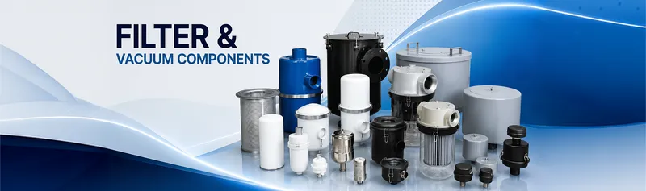
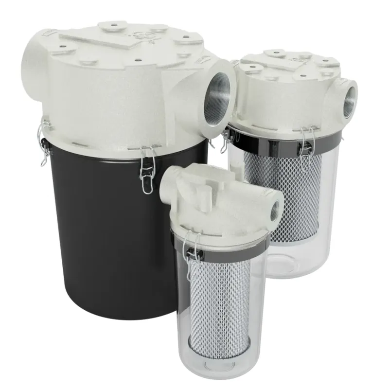
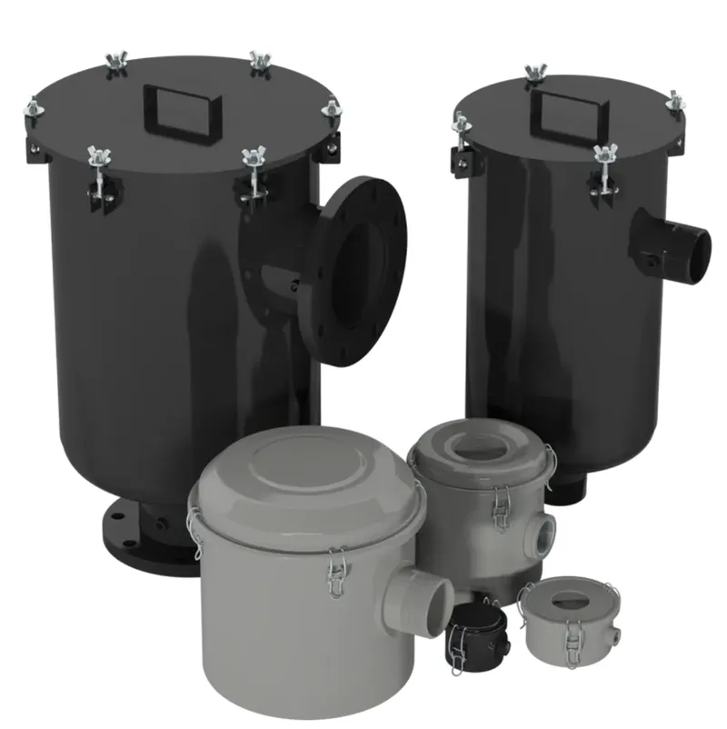
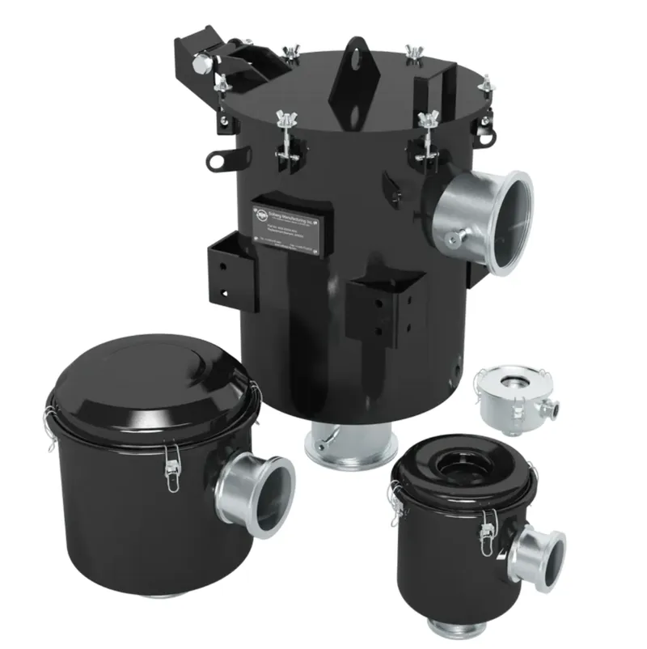
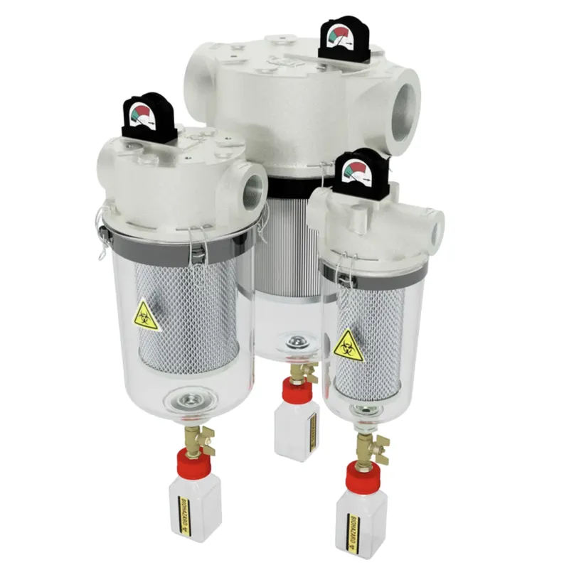
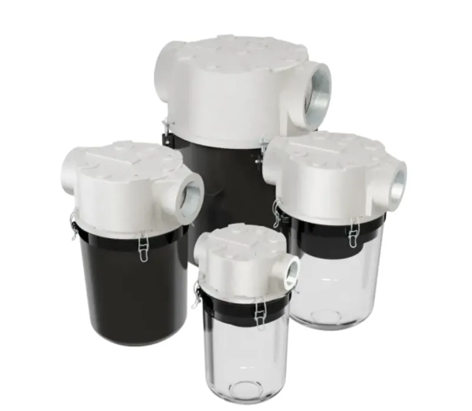
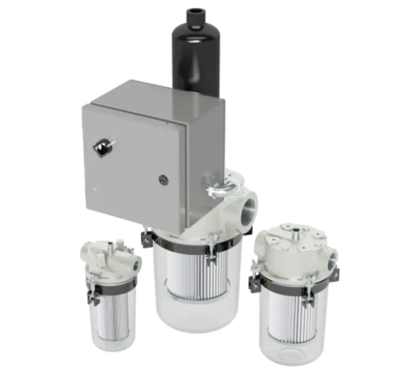
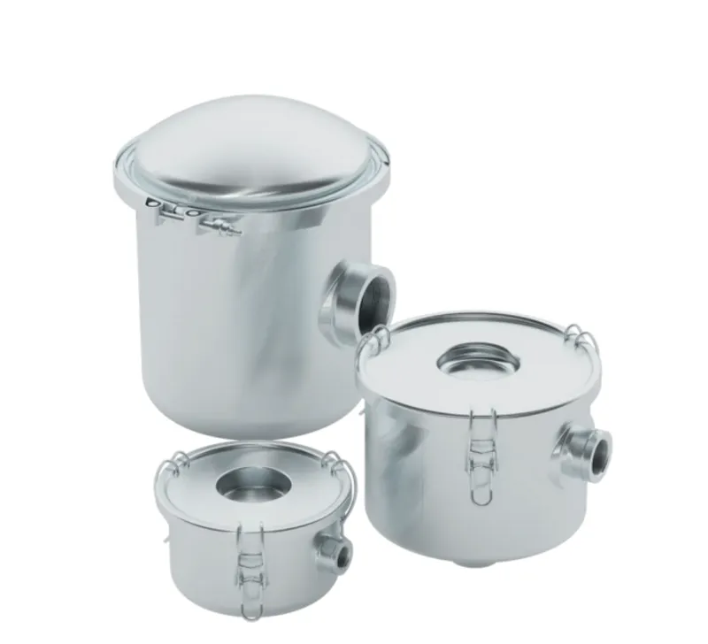

Solberg is a leading filter supplier for vacuum pump systems. We manufacture industrial vacuum pump filters to remove particulates that can harm your equipment. Whether you need a blower filter for rough vacuum applications or a high vacuum filter housing, Solberg's diverse selection of inlet filtration products will ensure high performance and extend the life of your equipment. Our inline vacuum filters offer superior protection for vacuum pumps and blower equipment. Contact us for more information on our inlet filtration products. We are happy to guide you to the right filtration products for your application.

Compact and durable inline filters designed to remove particulates, protect vacuum pump cylinders, and ensure peak performance.

Space-saving, right-angle inlet filters offering superior protection for vacuum pumps and blowers in space-constrained installations.

Industrial strength vacuum filters designed to handle high vacuum duties, protecting valuable systems against dust and fine debris.

Specialized medical vacuum filters that effectively trap bacterial and liquid contaminants, ensuring clean and safe medical environments.

Exceptional precleaner filters utilizing centrifugal separation to remove up to 85% of large particulates without replacement elements.

Heavy-duty reverse pulse filters designed for extreme dust load applications, featuring automated self-cleaning features.

ATEX certified filters designed for potentially explosive environments, meeting directive 2014/34/EU with CE marks.
Unlock advanced, reliable vacuum solutions designed to meet your industry’s unique demands.
CONTACT US
ADDRESS
No. 57, 8th cross, 1st B cross, Doddanna Industrial Estate, Vishwaneedam post,Near Peenya 2nd stage,Bangalore-560091, India
support@uniquevacuum.co.in
PHONE
9886726920 / 080-28367059